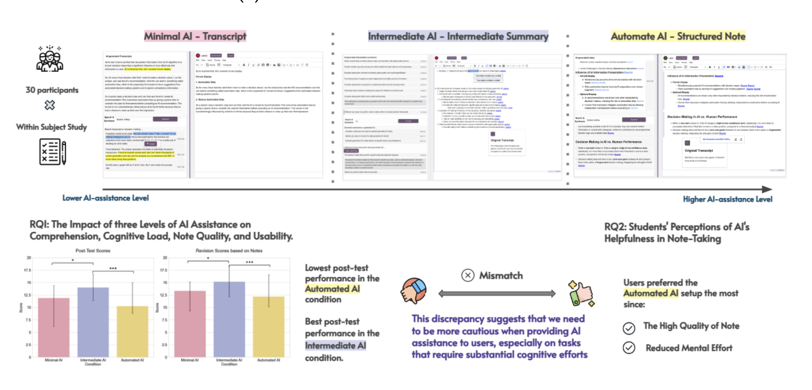
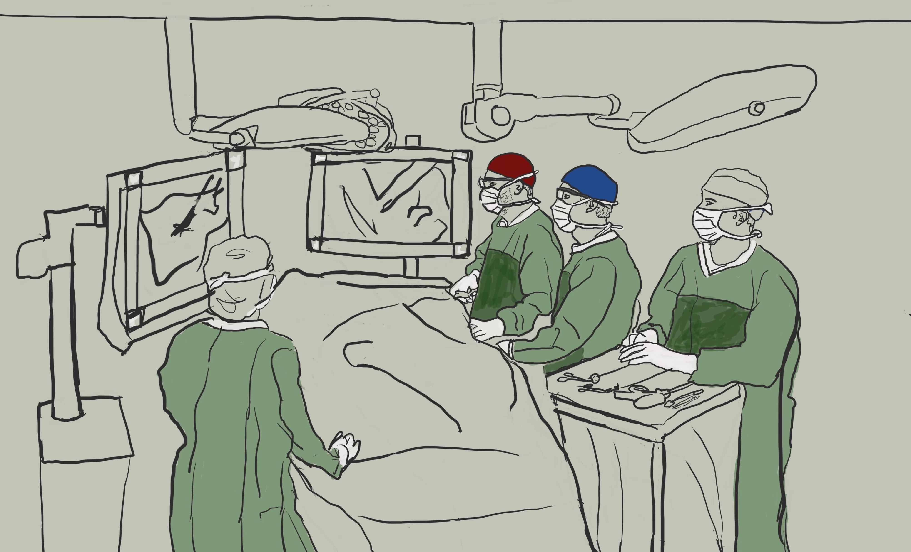
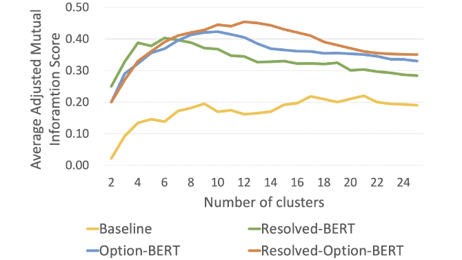
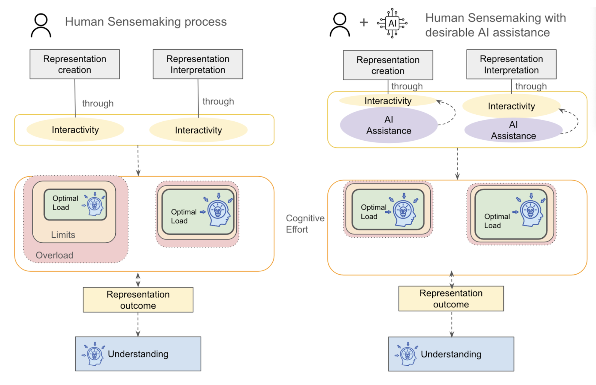
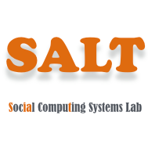

Bio
Hi, I'm Xinyue Chen. I am currently a forth-year PhD candidate at Computer Science and Engineering, University of Michigan, Ann Arbor, supervised by Prof. Xu Wang. Previously, I received my B.S. in the Department of Information Management from Peking University , advised by Prof. Pengyi Zhang. I also worked as a research intern at the "Tools for thought" group at Microsoft Research, Cambridge, UK mentored by Sean Rintel, Lev Tankelevitch, and Payod Panda.
Research Interests
I study how to design AI systems that enhance human thinking. My work focuses on two complementary challenges:
- First, how to design interactions that help users externalize evolving lines of reasoning and reuse prior intent across tasks like writing and collaborative sense-making;
- Second, how to ensure that AI support does not undermine agency or cognitive effort.
Beyond individual, I also study how AI can facilitate collaboration, not just between humans, but within human-AI teams. I investigate how intent and reasoning become fragmented in group work and design interaction mechanisms that enable AI to surface misalignment, mediate coordination, and facilitate teams' co-construction of meaning and shared understanding.
See more in my CV.Selected Publications

More AI Assistance Reduces Cognitive Engagement: Examining the AI Assistance Dilemma in AI-Supported Note-Taking.
Xinyue Chen, Kunlin Ruan, Kexin Ju, Nathan Yap, Xu Wang
Accepted with minor revision at CSCW2025 (to appear)

🏆 "Looking Together ≠ Seeing the Same Thing: Understanding Surgeons' Visual Needs During Intra-operative Coordination and Instruction
Xinyue Chen*, Vitaliy Popov*, Jingying Wang, Michael Kemp, Gurjit Sandhu, Taylor Kantor, Natalie Mateju, Xu Wang (* indicates equal contribution)
CHI2024

Late-Breaking Work/ Posters/ Workshops

Balancing Cognitive Effort and AI Assistance: an AI-assisted Sensemaking Framework for Synchronous Communication
Xinyue Chen, Xu Wang
CHI2024 - Sensemaking Workshop
Updates
- [April 2025] I will present our paper "Are We On Track? AI-Assisted Active and Passive Goal Reflection During Meetings." at CHI 2025, April 29th 9:20 am at the "Meeting and Collaboration" Session. More Info
- [May 2025] I'm going to start an internship at Adobe Research, working with Alexa Siu
- [April 2025] Our paper: "Strengthening the Chain of Intentionality Across Meetings: AI-Assisted Retrospection and Prospection For Knowledge Work." got accepted at DIS 2025.
- [Mar 2025] Our paper: "What Does Success Look Like? Catalyzing Meeting Intentionality with AI-Assisted Prospective Reflection." got accepted at CHIWORK 2025.
- [Feb 2025] Two paper: "Are We On Track? AI-Assisted Active and Passive Goal Reflection During Meetings." and "LADICA: A Large Shared Display Interface for Generative AI Cognitive Assistance in Co-Located Team Collaboration." got accepted at CHI 2025.
- [Oct 2024] Our paper: "MeetMap: Generating Dialogue Maps as Real-Time Cognitive Scaffolds for Online Meetings." got accepted at CSCW 2025.
Experience
-
Microsoft Research, Cambridge, UK
Research Intern, June 2024 - Aug 2024
Mentor: Sean Rintel, Lev Tankelevitch, Payod Panda
Topic: AI-assisted during meeting reflection.
LifeLongLearning Lab, University of Michigan, Ann Arbor
Research Assistant, June 2020 - Now
Mentor: Xu Wang
Topic: Designing online meeting and learning tools which support better mutual understanding.

SALT Lab, University of University of Illinois at Urbana-Champaign
Research Intern, Feb 2020 - April 2021
Mentor: Yun Huang
Topic: Understanding the new trend and practice in video community in China.
Department of Information Management, Peking University
Undergraduate Student, Sep 2017 - July 2021
Supervior: Pengyi Zhang
Received Bachelor's Degree (with Honors) at PKU.